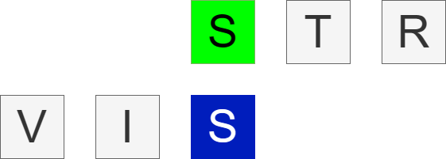

<nav class="container mx-auto my-10">
  <div class="flex items-center md: mx-6">
      
    <div class="grow gap-6 justify-start hidden md:flex">
      <a *ngFor="let algorithm of algorithms" href="#">{{algorithm}}</a>
    </div>
    <div class="grow gap-6 justify-end hidden md:flex">
      <button (click)="changePage('/')">Home</button>
      <button (click)="changePage('/about')">About</button>
      <a href="https://github.com/interysy/4th-year-project-string-matching-visualiser"><fa-icon [icon]="['fab', 'github']" size="lg"></fa-icon></a>
      <a href="https://www.linkedin.com/in/michal-wozniak-9a2474240"><fa-icon [icon]="['fab', 'linkedin']" size="lg" class="blue-icon"></fa-icon></a>
    </div>
    <button class="flex justify-end md:hidden" type="button" (click)="toggleMobileMenu()">
      <fa-icon name="menu-button-on-sm" [icon]="['fas', 'compass']" size="lg"></fa-icon>
    </button>
  </div>
</nav>
<div #mobileMenu class="hidden flex items-center justify-center flex-col gap-3" id="mobile-menu">
  <a *ngFor="let algorithm of algorithms" href="#">{{algorithm}}</a>
  <button (click)="changePage('/')">Home</button>
  <button (click)="changePage('/about')">About</button>
  <a href="https://github.com/interysy/4th-year-project-string-matching-visualiser"><fa-icon [icon]="['fab', 'github']" size="lg"></fa-icon></a>
  <a href="https://www.linkedin.com/in/michal-wozniak-9a2474240"><fa-icon class="blue-icon" [icon]="['fab', 'linkedin']" size="lg"></fa-icon></a>
</div>